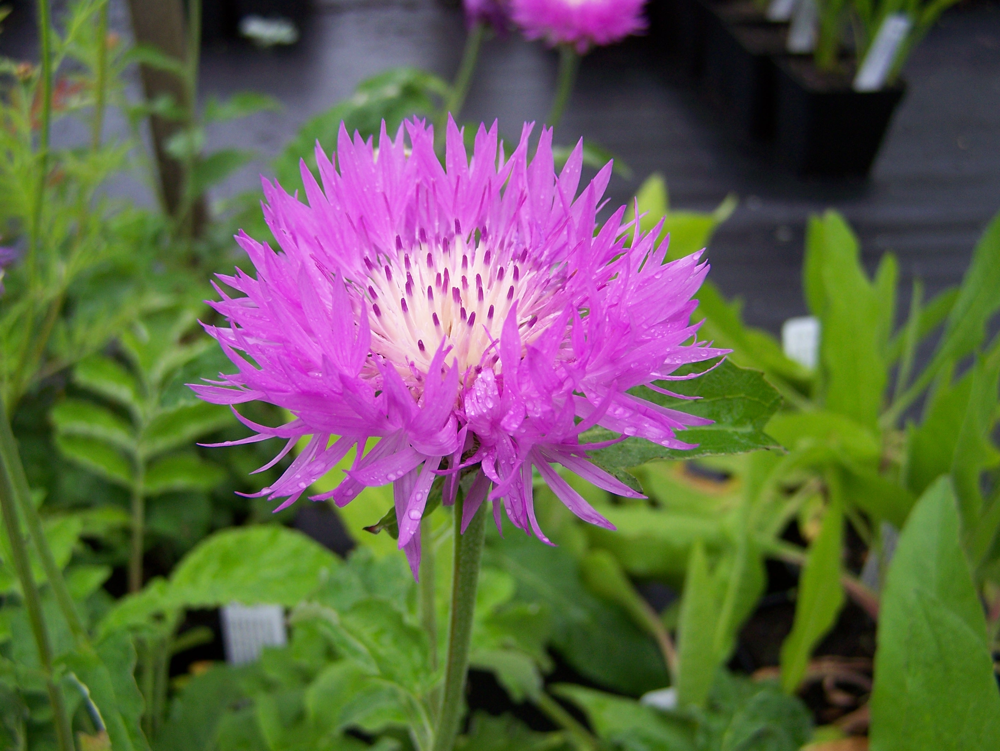
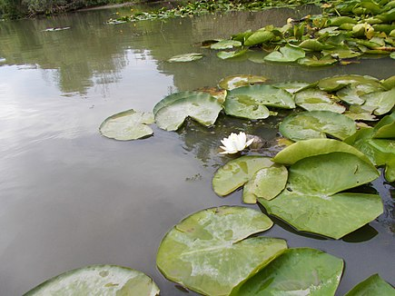
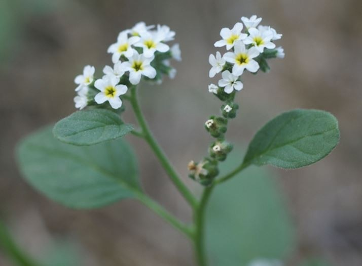

Flora Deltei Dunării
Flora Deltei este reprezentată în mare parte de o vegetație specifică zonelor umede (stuful, papura, rogozul, în amestec cu salcia pitică) și ocupă 78% din totalul suprafeței. Zăvoaiele ocupă 6% din suprafața deltei, fiind păduri de salcie, frasin, arin, plop, care cresc pe grindurile fluviatile, fiind periodic inundate, iar ochiurile de apă sunt acoperite de o vegetație acvatică și plutitoare, ocupând 2% din suprafața deltei. De asemenea, există păduri (Pădurea Letea și Pădurea Caraorman) alcătuite din arbori (stejar brumăriu, stejar pedunculat, frasin, plop tremurător, ulm), arbusti (zălog, cătină roșie) și plante agățătoare (hamei, curpen).
La nivelul ierburilor sunt întâlnite elemente floristice (meridional-continentale și xero-mezofile) din specii rare printre care unele protejate la nivel european prin Directiva 92/43/CE (anexa I-a) din 21 mai 1992 (privind conservarea habitatelor naturale și a speciilor de faună și floră sălbatică); astfel:
- Centaurea - aflată pe lista roșie a IUCN
- Capul Șarpelui
- Otrățelul bălților 
- Trifoiașul de baltă
- Ciucușoară de nisip
- Orhideea piramidă
- Volbură de nisip
- Sânziană
- Garofiță
- Coșaci
- Valentiță
- Nebunariță
- Nufăr galben
- Nufăr alb
- Obligeană
- Ferigă de baltă
- Piciorul cocoșului
- Vitrigon 
- Alior
- Alior de baltă
- Cârcel
- Pelin
- Bărbișoară
- Volbură
- Varză de mare
- Pătlăgină
- Ață de mare
- Brândușă de nisip
- Siminoc
- Grășătoare
- Chimionul porcului
- Vanilie sălbatică
- Vioreaua de baltă
- Ploșnițoasa 
- Bujori
- Untul - vacii
- Petunie
- Ferigă plutitoare
- Otrățel de baltă
- Plutică
- Troscot de apă
- Săgeata apei
- Pipirig
- Rogoz
- Pir de mare